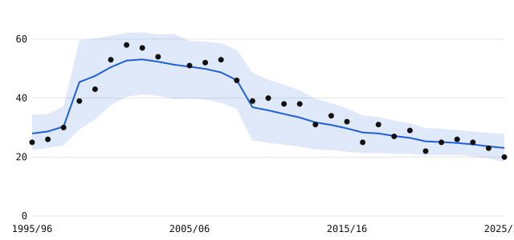
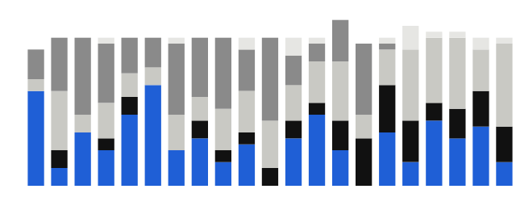

Tool · Player Pool Atlas · Czech ice hockey players, 1995/96–2025/26
Player Pool Atlas, hockey: the Czech player pool against nine peers
A descriptive atlas of Czech professional hockey players against nine peer nations: per head Czechia ranks 4th of 10 in the NHL, and its NHL group has worn down since 2001/02 without one clear break.
- NHL players per million, 2025/26
- 1.83 20 players · 4th of 10 · peer median 1.21 · administrative count
- Czech NHL players at the games threshold
- 58 → 20 2001/02 · 2025/26 · administrative count
- under-21 share of Extraliga skater games, 2014/15–2025/26
- 7.9 % Liiga 14.3 % · SHL 16.7 % · administrative count
- when the fall happened
- 2008/09–2023/24 87 % of the probability spread over these seasons · no single season stands out (the likeliest, 2009/10, has 0.09)
Overwhelmed? Here's the short version
- The atlas counts Czech players in the NHL and Europe's four strongest leagues against nine peers.
- Per head, Czechia is in the middle of the ten, far behind Sweden and Finland.
- The per-head ranks hold under other thresholds; the dating of the decline does not.
- Everything here is description. The KHL and the Slovak league are not covered, and the AHL is not, because its terms forbid automated access; if Czech players moved there, the NHL fall overstates the loss.
- For 649 of the 867 Czech players, nationality comes only from the Extraliga foreigner flag or a licence: eligibility, not citizenship.
Photo: David Bier · Public domain, toned

What the atlas does and comparable work
The atlas asks how deep the Czech professional hockey pool is against nine peer nations, when its NHL presence declined, where by position and age it is thin, whether young players get ice time at home, how Czech players fare abroad and which leagues the national team is drawn from. It is published at hockey.bsandova.com1. Hockey-Reference lists NHL players by birthplace2, and Elite Prospects keeps career records across leagues3; neither counts a nation per head against named peers across several leagues with one rule for nationality. The atlas uses the design of the football atlas4: the same ladder of leagues, per-head counts, a break model for the long series and a committed snapshot. It is exploratory and was not pre-registered.
Method
Sources. One fetcher per source: the NHL stats REST API5, the Liiga6 and SHL7 JSON statistics, hokej.cz for the Extraliga8, the DEL9 and National League10 statistics, Eurostat population on 1 January11 and the English Wikipedia roster articles for every World Championship and Olympics since 201012. Each source was fetched once, politely, into a raw cache; regular seasons only.
Ladder. Rung 1 is the NHL. Rung 2 is the SHL, Liiga, National League and DEL; "NHL + rung 2" is the five-league headline. The Czech Extraliga is the home league. A player counts in a season when he reaches at least 20 of 82 games, pro-rated to the league-season's schedule, the 95th percentile of skater games: 20 in a full NHL season, 12 in 2012/13, 17 in 2019/20 and 14 in 2020/21.
Nationality. One definition for every source, in this order: citizenship where a league publishes it (the NHL's nationalityCode, the Liiga's and SHL's nationality); a World Championship or Olympic roster since 2010; otherwise eligibility or licence (the Extraliga's foreigner flag, the DEL's licence from 2022/23, the National League's Swiss licence). Czechoslovak-era births take the state the NHL recodes them to.
Exclusions. The KHL is left out by design, which removes a real destination, most of all before 2014. The AHL is not fetched because its terms forbid automated access, and the Slovak Extraliga because its robots.txt blocks it; Slovakia is measured through its players in the covered leagues. Elite Prospects is not scraped, by its terms.
Linking. Records are joined across leagues on the name, with diacritics folded, plus the full birth date; then on first initial, surname and birth date; records without a birth date join on the name alone when exactly one person of that name played within four seasons. The build holds 17 991 people, 14 309 with a nationality; 189 carry conflicting codes, and in 50 of them an Extraliga "Czech" flag is overridden by citizenship or a roster.
The NHL series 1995/96–2025/26 is fitted with a Poisson local-level model with two step changes whose seasons are marginalised, the football atlas's series model, in PyMC13.
Worked example: Czechia in 2025/26
Twenty Czech players reached the games threshold in the NHL, 1.83 per million inhabitants, 4th of 10 and above the peer median of 1.21. Sweden (7.26) and Finland (7.25) have about four times the Czech rate. Counting the five leagues, Czechia has 53 players, 4.86 per million, 5th of 10 against a peer median of 3.551.

outputs/q1_per_million.json, snapshot of 29 September 2026.The Czech NHL group rose from 25 in 1995/96 to 58 in 2001/02 and has fallen to 20. The model dates a rise to 1998/99 (probability 0.39, level ×1.47, 90 % HDI 0.73–1.97; the HDI, highest-density interval, is the narrowest range that holds 90 % of the model's probability). The most probable season of the fall is 2009/10, with probability 0.09; 87 % of the fall's probability is spread over 2008/09–2023/24, and the probability that the step lowers the level is 0.80. The fitted level is 23.1, 43 % of its 2002/03 peak of 53.1. Finland and Sweden show only rises over the same seasons1.

outputs/q1_per_million.json and q2_break_model.json, snapshot of 29 September 2026.No Czech player aged 21 or under reached the threshold in the NHL or rung 2 in 2025/26. The largest shortfall against the peer median is forwards aged 21 or under, 6.1 players, then forwards aged 22–25 (2.8) and defencemen aged 21 or under (2.0). Forwards aged 26–29 are furthest above the median: 15 players, 1.37 per million against 0.66, then defencemen aged 30 or over, 7 players against a median of 0.
| league | games, mean 2014/15–2025/26 | ice time, mean | games, 2025/26 | ice time, 2025/26 |
|---|---|---|---|---|
| Extraliga | 7.9 % | 5.5 % | 5.7 % | 4.1 % |
| Liiga | 14.3 % | 11.9 % | 13.6 % | 11.1 % |
| SHL | 16.7 % | 11.4 % | 15.0 % | 9.4 % |
Under-21 here means aged 20 or less. The National League and the DEL publish no birth dates, so their shares are not measured. Abroad, over 2020/21–2025/26, Czech NHL skaters played 0.98 times the median ice time of their league, season and position and scored 0.87 times its points per game; in the Liiga the ratios are 1.09 and 1.40, in the SHL 1.08 and 1.301.
Across 21 World Championship and Olympic rosters since 2010, Czech roster spots came on average 30 % from the NHL, 28 % from the Extraliga, 25 % from the KHL, 13 % from rung 2 and 3 % from other leagues; the Czech NHL share is 2nd of the ten nations. No KHL player has been on the roster since the 2022 World Championship, and the 2026 World Championship roster had 4 NHL players, 6 from rung 2 and 14 from the Extraliga112.

outputs/q6_national_team.json, snapshot of 29 September 2026.Tests and measured error
The repository's suite of data contracts per fetcher (fields, types, row counts per season), linking and snapshot-hash checks and analysis tests on fixtures runs at d1f9f88 with 247 software tests passing and 16 skipped; the outputs record the SHA-256 of the snapshot files they were built from, and the tests fail when the snapshot changes without a rebuild13. The per-head ranks hold under other thresholds: counting any NHL game, Czechia has 29 players, 2.66 per million, still 4th; with a flat 20 games everywhere, 20 and 53, 4th and 5th. In 2025/26 every qualifying NHL, Liiga and DEL player has a nationality; 22 of 365 in the National League and 4 of 365 in the SHL do not. Only 2022/23–2025/26 have every rung-2 league at least 90 % identified, so the five-league series before 2022/23 is a lower bound. The break model runs four chains of 1 000 draws after 1 000 tuning steps with seed 42; over the three fits the largest R-hat is 1.007 and there is one divergent transition, in Finland's1.
Limits
The KHL supplied 25 % of Czech roster spots since 2010, so the pool counted here is smaller than the one the national team drew on. AHL seasons appear only in NHL players' career records, a survivor-biased view. For 649 of the 867 Czech players on the pool page the only evidence of nationality is the Extraliga foreigner flag or a licence, which is eligibility, not citizenship. The National League and DEL publish no birth dates, so Switzerland and Germany drop out of the age medians. SHL, Extraliga, National League and DEL records without a birth date are linked on the name alone; unmatched and ambiguous counts are in the atlas's methodology. A per-million rate moves a lot for a small nation when a few players change. The atlas predicts nothing, and its counts measure presence, not quality.
Install and reproduce
From a clean clone, uv sync && make restore-snapshot puts the committed snapshot in place, make verify-snapshot checks its hashes, make analysis recomputes outputs/ (about six minutes, mostly the break model) and make pages renders the report and the pool page; no fetching is needed, and make test runs the tests13. The live atlas is at hockey.bsandova.com.
References
- Šandová, B. (2026). Czech hockey: the player pool, report and pool page, build of 29 September 2026 (questions 1–7, methodology, limitations). hockey.bsandova.com. Accessed 29 September 2026.
- Hockey-Reference. NHL Player Birth Places. hockey-reference.com/friv/birthplaces.cgi. Accessed 29 September 2026.
- Elite Prospects. Hockey player database. eliteprospects.com. Accessed 29 September 2026.
- Šandová, B. (2026). Player Pool Atlas, football: Czech players in Europe's strongest leagues. bsandova.com/texts/football, version 2. Accessed 29 September 2026.
- NHL. NHL stats REST API: skater and goalie summaries and bios per season, career records (
nationalityCode, birth date, time on ice from 1997/98). api.nhle.com/stats/rest. Snapshot of 29 September 2026. - Liiga. Statistics JSON API (
api/v2), regular season: nationality, birth date, time on ice from 2014/15. liiga.fi. Snapshot of 29 September 2026. - SHL. Statistics JSON (
statistics-v2), regular season: nationality (mostly N/A before about 2010), birth date, time on ice from 2009/10. shl.se. Snapshot of 29 September 2026. - hokej.cz. Extraliga player statistics and profiles (HTML): foreigner flag, birth date, time on ice from 2013/14. hokej.cz. Snapshot of 29 September 2026.
- PENNY DEL. Statistics pages (HTML), regular season: licence nationality from 2022/23. penny-del.org. Snapshot of 29 September 2026.
- Swiss Ice Hockey Federation. Statistic API, National League regular season: Swiss or foreign licence. data.sihf.ch. Snapshot of 29 September 2026.
- Eurostat. Population change, demographic balance and crude rates at national level, table
demo_gind(indic_de=JAN, population on 1 January), dataset updated 21 July 2026. ec.europa.eu/eurostat. Snapshot of 29 September 2026. - Wikipedia. Roster articles of the IIHF World Championships 2010–2026 and the Olympic tournaments 2010–2026, at the revisions listed in
data/snapshot/rosters_sources.json, CC BY-SA 4.0. en.wikipedia.org. Accessed 29 September 2026. - Šandová, B. (2026). czehockey-player-pool-atlas, v0.1.0. Software, github.com/sandovabarbora/czehockey-player-pool-atlas, commit
d1f9f88, MIT. PyMC 5.28.5. Accessed 29 September 2026.
Change log
- 3 October 2026: after a reader's review, the facts card gives the range of seasons for the fall instead of one season with probability 0.09; the short version states why the AHL is missing and that nationality is eligibility for 649 of 867 players; HDI is explained at first use. No number changed.
- 14 September 2026: first published as "Who Czech hockey produces, per capita".
- 29 September 2026, version 2: reframed as a tool page and retitled. Correction: the facts, the short version and the text gave four Czech NHL defencemen and fourteen Finnish ones; the cohort tables, which the build computes, give three and nine, and the per-head counts (15 for Czechia, 34 for Finland) match the tables, so the text now says three and nine. Correction: the per-head count was described as every Czech-born player on an NHL roster; it counts those with at least ten games. Correction: the cohort labelled 23–25 covers ages 22–25 (age reached in 2025), and is relabelled; the U22 row covers 18–21. Hertl, born 1993, falls in the 30+ cohort and is no longer named in the 26–29 cohort. Correction: the sensitivity test perturbed only the Liiga and Extraliga factors, not each factor; the claim that the map is not sensitive to them was removed, and the two uniform-scaling rows (all −20 %, all +20 %, which cannot change a ranking) and the baseline row were dropped from the table. The shrinkage is called a fixed prior, not empirical Bayes. The pool is described by its actual eligibility rules (78 players confirmed eligible) instead of "385 players with Czech eligibility". Added comparable work, the population caveat, the note that the fetched data are not committed, silhouette and age caveats for the clusters, and a caveat on medians in cells of one or two players. Removed the claim that the per-head number had not been aggregated before, "world class", the cluster archetype counts (18, 122, 9 and 92 players, median birth years 1996 and 2001), and the section on the knowledge graph, similarity search and scouting briefs (about 3 200 players, 1 177 analogs, about 570 duplicate nodes), which is reduced to one sentence pointing to the README. References split to one work each, with access or fetch dates. The US population is given as 335 million, the figure the per-head count divides by, instead of 340 million.
- 29 September 2026: figures only, no sentence of the text or number changed. The per-head bars and the two atlases are interactive charts drawn from the atlas's data, with the static renders kept as fallbacks; the bars became fig. 1, so the forwards are now fig. 2 and the defencemen fig. 3. Tables and figures sit in the text column. The maps draw every point in the held blue and give the K-means cluster in the tooltip and a table, because the published map data carry no league for a rung colour; the movement arrows are drawn as lines.
- 29 September 2026, version 3: rewritten for the rebuilt atlas on 29 September 2026. The atlas now compares ten nations (Canada and the USA out; Switzerland, Germany, Latvia, Denmark, Norway and Austria in) over a two-rung ladder of five leagues, counts nationality by one definition instead of NHL birth country, takes population from Eurostat instead of code constants, and commits its processed snapshot. Every number is new and read from the atlas's
outputs/: the per-head figure is 1.83 (4th of 10) instead of 1.38 (fifth of six) because the rule, threshold, peers and population changed. The style and quality maps, the clusters, the league factors and their sensitivity test, the cohort tables of points per game and the AI and video layer were withdrawn with the old atlas, and their figures and data files removed. The three figures are new interactive charts drawn from copies of the atlas outputs; the retitled page cites the new build (commitd1f9f88). - Checked against editorial standard v1 on 29 September 2026.